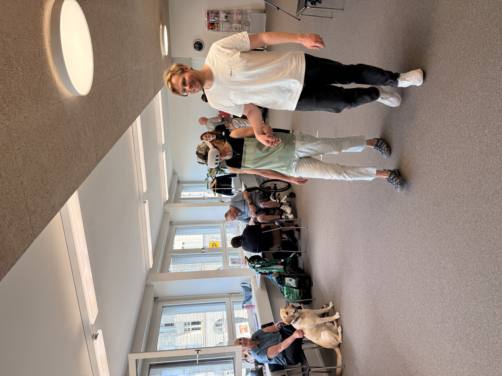
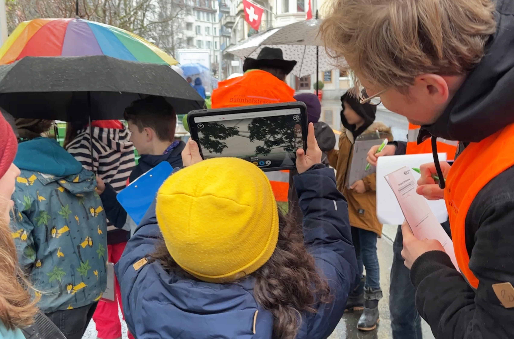
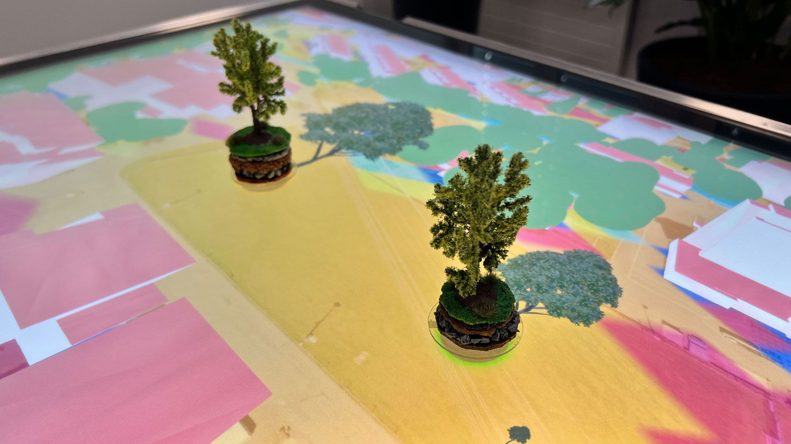
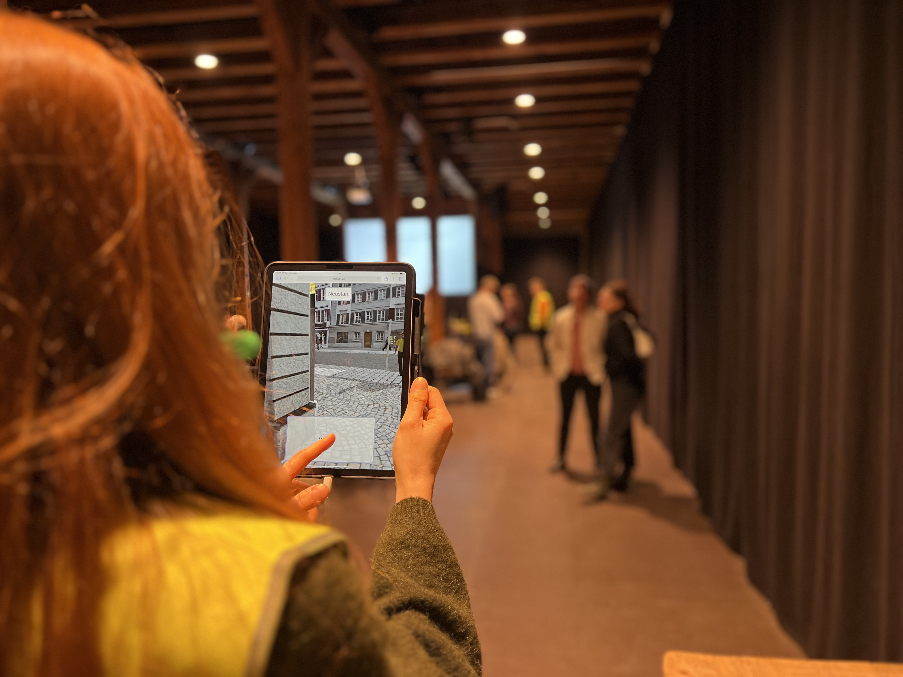
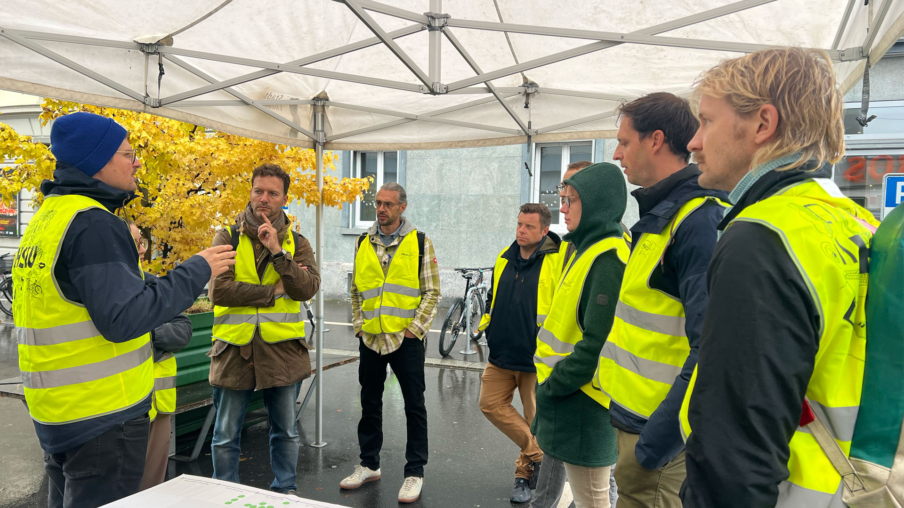
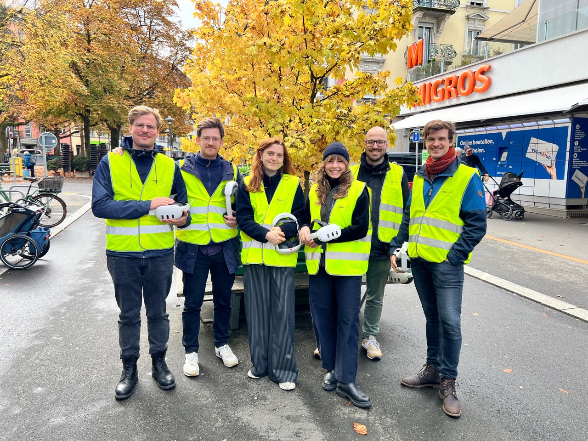

Extended Spaces · Visual Narrative research group · HSLU Design Film Kunst · since 2022
AR/MR research
and prototyping
I work as a research assistant in the Extended Spaces team at HSLU Design Film Kunst. We build augmented and mixed reality tools that make city planning, public participation and cultural heritage tangible and test them with the people who will actually use them, not just with other designers.
What I do
- Take AR/MR prototypes from first idea through storyline, workshop and testing to a working build
- Build 3D assets in Blender, and develop AR/MR applications in Unity and Adobe Aero
- Set up physical-to-digital prototyping, 3D printing, hardware, workshop material
- Plan and run workshops and public testing sessions with cities, municipalities and citizens
- Edit video and document projects for research reporting and communication
Where it sits
The work sits mostly in two areas: participatory city planning and co-design, and making cultural heritage accessible through hybrid, in-person and virtual formats.
Impressions






Featured project
Achtung Barriere!
Make invisible barriers visible. A virtual city walk and a mixed-reality experience that put you behind someone else's eyes.